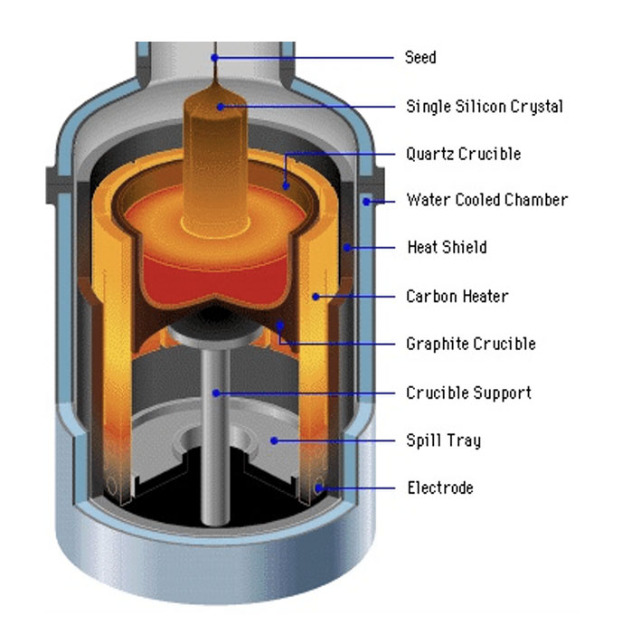
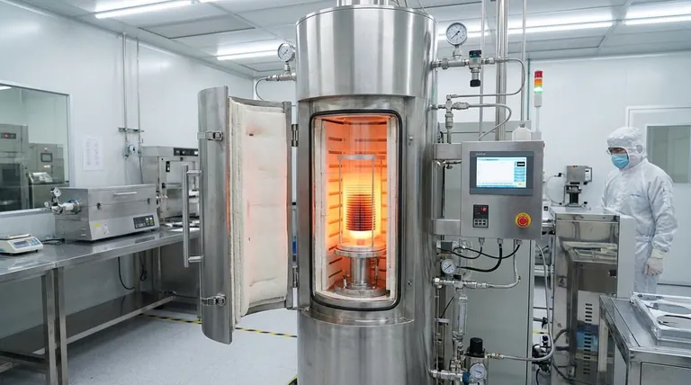
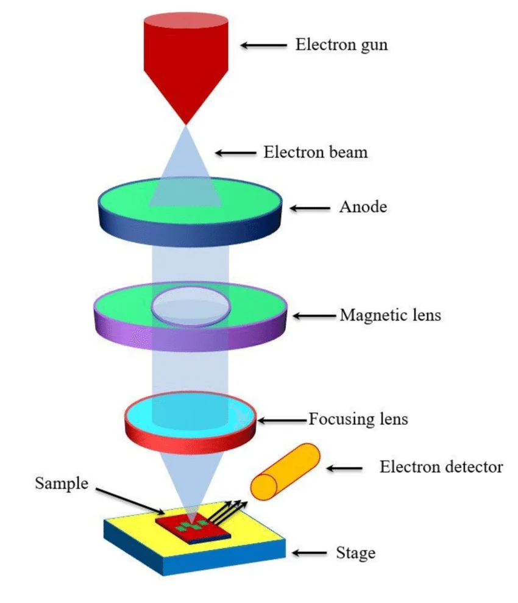
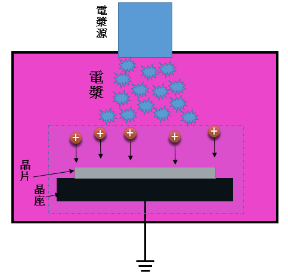
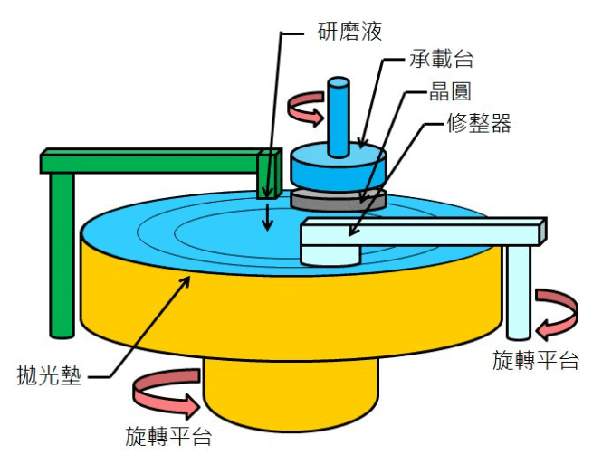

半導體奇幻旅程
把沙子變成智慧晶片的魔法
作者：莊旻軒
晶圓製造：從沙子到畫布
將沙子（石英）提煉並拉成純度極高的單晶矽棒。
主流技術「CZ 法（直拉法）」：在高溫坩堝中慢慢拉出大尺寸晶棒。
將晶棒切割成薄片，就成了「晶圓」。
💡 就像做拔絲地瓜或拉糖，師傅精準控制火候，拉出完美的糖柱。切成薄片後，就是我們未來要畫電路圖的「空白畫布」。

(示意圖：CZ法)
熱製程：氧化與擴散
在高溫爐管中進行，是晶圓加工的基礎。
**氧化**：在晶圓表面長出二氧化矽當保護層或絕緣層。
**擴散**：將摻雜物（硼或磷）打入矽基板，改變局部導電性。
💡 氧化就像「烤土司」，放進高溫烤箱烤出一層酥脆保護殼。
💡 擴散就像「醃肉」，把調味料撒在表面，透過高溫滲透進肉裡改變性質。

(示意圖：高溫爐管)
微影製程：印上電路圖
將設計好的圖案轉印到晶圓上，佔據近一半的製程時間。
步驟包含：塗佈光阻 ➔ 對準與曝光 ➔ 顯影。
正光阻曝光後可洗掉，負光阻曝光後會保留。
💡 完全就是「洗相片」！把電路圖當底片（光罩），用手電筒（曝光機）把圖案曬在塗滿感光顏料的畫布（光阻）上，泡顯影液後電路圖就浮現了。

(示意圖：曝光顯影流程)
蝕刻與電漿：精準雕刻
利用電漿中的自由基（化學）或離子（物理）移除材料。
只會挖除「沒有被光阻保護」的區域。
電漿是在低壓真空中通入射頻功率產生。
💡 就像是「高科技噴砂機」。沒有被光阻（保護膜）蓋住的地方，就會被無情地噴挖掉，精準刻出微小的溝槽。

(示意圖：電漿蝕刻原理)
沉積(CVD)與平坦化(CMP)
**CVD 薄膜沉積**：生長介電質（絕緣）或金屬導線。
**CMP 化學機械研磨**：徹底磨平晶圓表面，是先進製程必備技術。
💡 CVD 就像在微觀世界「蓋立體高架橋」，一層層鋪上水泥和管線。
💡 CMP 就像「超級壓路機」，因為高架橋蓋完表面會凹凸不平，必須噴軟化劑再用壓路機磨平，才能繼續往上蓋。

(示意圖：CMP 壓路機概念)
封裝與測試：穿上防護衣
**測試**：用探針檢測每顆晶粒的電性，標記不良品。
**封裝**：將晶圓切割成獨立晶粒，包裝保護並拉出接腳。
確保晶片能在惡劣環境中正常工作並與主機板連接。
💡 就像幫脆弱的晶片「穿上黑色防彈衣」（封裝），接上能與外界溝通的「神經」（接腳），確認它是個健康寶寶才准出廠。
(示意圖：IC 封裝成品 / ./assets/images/packaging.png)
1 / 7
上一頁
下一頁